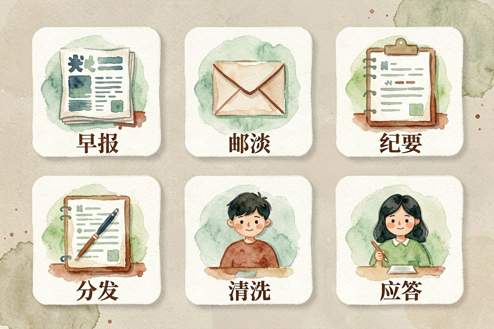
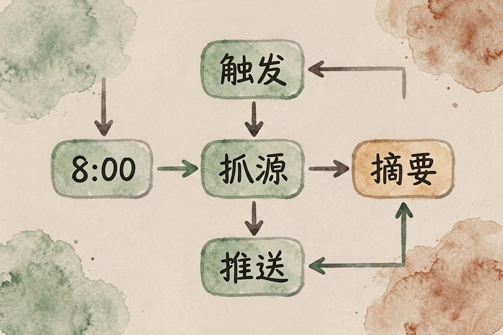
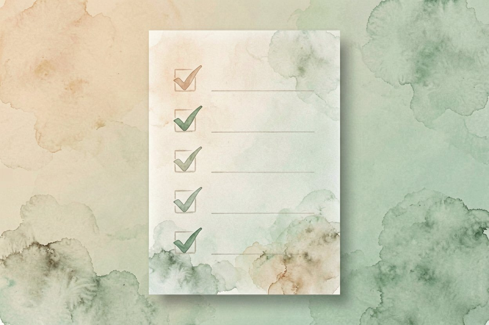

AI 工作流自动化：六种最值得先自动化的日常场景
总在手动做同一件事？把那些固定步骤排成一条自动链，到点自己执行，你只管收结果。
AI 工作流自动化是本文的核心主题，下面详细介绍如何使用。
AI 工作流自动化是什么：把重复动作串成链

AI 工作流自动化，是把「抓取、总结、转发、回复」这类固定动作串成一条链，设好触发条件让它定时自己跑。你不再每天手动做同一件事，只在对结果不满意时介入。和多智能体是什么思路相通，都是让模型连着干完一串步骤。
它和单次提问不同。单次是你问一句答一句，工作流是提前排好，到点自动执行。新手用扣子、n8n 这类零代码工具就能搭，不用写脚本。它的价值不在多聪明，而在把重复动作固化，你腾出手做更贵的事。先从一个小场景试，比想整套流程更稳。
六种最值得先自动化的场景
下面六类最稳、回报最快，建议按这个顺序挑。
1. 每日资讯早报
把三五个订阅源的最新文章抓来，用模型各写一句摘要，汇总成一条推送。适合关注行业动态的人，早上打开就知今天发生啥。坑点：源太多会冗长，控制在五个以内，挑你真会看的源。推送前先人工扫一眼标题，偏了就调抓取范围，比事后补救省事。
2. 邮件摘要与分流
长邮件堆里，让模型先出三段摘要并标紧急度，重要件置顶。适合邮箱爆炸的职场人。坑点：别让模型自动发回信，只做摘要不代发，避免误回领导或客户，惹麻烦。
3. 会议纪要转待办
录音转写后自动提取待办、责任人和时间，发到协作群。和AI 会议纪要工具配合最顺。坑点：人名别写错，生成后扫一眼再发，错发责任人很尴尬。时间格式统一成年月日，群里一眼能排进日程。
4. 社媒内容多平台分发
一篇稿子按各平台调性改写，分别排版定时发。自媒体人最省时。坑点：各平台语气不同，统一模板会被限流，分段改写才自然，别偷懒一份通发。配图尺寸也按平台裁，长图发短视频平台会被压变形。
5. 表格数据定时清洗
每天导出的报表自动去重、补格式、标异常，产出干净表。运营和财务常用。坑点：先小样验证规则，规则写错会整列错，最好留一版原始数据备份。
6. 客户提问自动应答
把高频问题接知识库，模型按资料答，答不了的转人工。客服前置最省力。坑点：敏感问题必须转人，别让模型替你承诺退款或时限，超出授权范围就转人工。
搭建前先想清楚的三件事

先想触发条件，是定时还是事件驱动，定错了链就乱跑。再想失败怎么办，某一步出错要有兜底，别让半截流程卡死。最后想清楚人什么时候接手，自动化不是甩手，关键节点仍要你确认。
一个最小可用的工作流长这样，三步走就能跑：
工作流示例（资讯早报）：
触发：每天 8:00
步骤1：抓取 3 个订阅源的最新文章
步骤2：用模型各写一句摘要
步骤3：汇总成一条推送发到飞书补充：AI 工作流自动化的详细用法可参考上文步骤。
补充：AI 工作流自动化的详细用法可参考上文步骤。
补充：AI 工作流自动化的详细用法可参考上文步骤。
关于AI 工作流自动化，建议结合实操理解，多看多试。
---
关于AI 工作流自动化，建议结合实操理解，多看多试。
新手从哪条开始最稳
A: 掌握 AI 工作流自动化 的关键在于多实践，建议先跑通基础流程再逐步深入。
Q: AI 工作流自动化 免费吗？ A: 大多数工具提供基础免费额度，具体以官网当前说明为准。
AI 工作流自动化的最佳实践见上文详细步骤，别错过核心要点。

本文信息核对于 2026-08-24。AI 产品的价格、免费额度与功能变动频繁，实际以各工具官网当前说明为准。